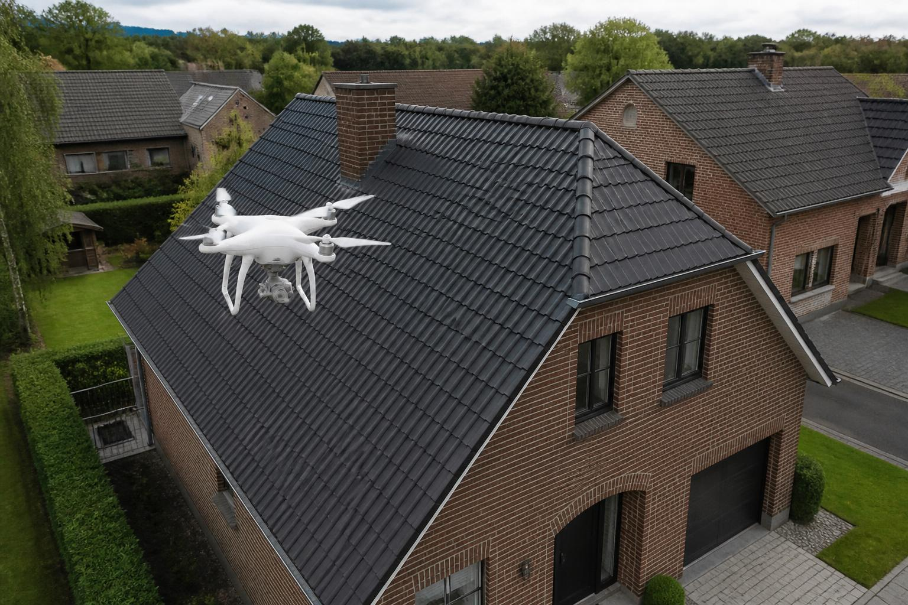

Dakinspectie
Vanaf €99
Professionele visuele controle van uw dak met drone.
- Dakpannen en dakbedekking
- Nok en dakranden
- Schoorstenen en dakgoten
- Zichtbare beschadigingen
- Mos en begroeiing
- Moeilijk bereikbare delen
- Inspectierapport
PRO DAK INSPECT
Onafhankelijke dakinspectie met drone
Een onafhankelijke dakinspectie geeft u een objectief beeld van de staat van uw dak, zonder dat wij gebonden zijn aan een dakdekker of reparatiebedrijf. Zo weet u precies welke problemen er zijn en welke werkzaamheden daadwerkelijk nodig zijn.
Objectief. Professioneel. Onafhankelijk.
Onafhankelijk
Niet gebonden aan een dakdekker
Snel
Efficiënte inspectie vanuit de lucht
Duidelijk
Professionele beelden en inspectierapport
Onafhankelijk
U krijgt een onafhankelijke beoordeling van de werkelijke staat van uw dak.
U krijgt inzicht in wat echt noodzakelijk is en voorkomt onnodige reparaties.
Met een professionele inspectie worden mogelijke gebreken en aandachtspunten zichtbaar.
Met een onafhankelijk inspectierapport kunt u zelf beslissen welke vervolgstappen u wilt nemen.
Objectief. Professioneel. Onafhankelijk.
Dronetechnologie
Met moderne dronetechnologie kunnen moeilijk bereikbare delen van een dak veilig en efficiënt vanuit de lucht worden geïnspecteerd.
Vraag uw dakinspectie aan
Diensten
Professionele drone-inspecties voor onderhoud, schade, renovatie en documentatie.
Vanaf €99
Professionele visuele controle van uw dak met drone.
€100
Visuele inspectie van zonnepanelen en zichtbare onderdelen.
Geen elektrische of thermische diagnose.
Vanaf €129
Veilige visuele controle van moeilijk bereikbare gevels.
Vanaf €149
Voor zichtbare schade na bijvoorbeeld storm, hagel of hevige regen.
€200
Duidelijke visuele documentatie voor een verzekeringsdossier.
Pro Dak Inspect levert visuele documentatie en geen technische of verzekeringskundige expertise.
€250
Professionele documentatie van de toestand vóór en na dakwerken.
Pakketten
Kies de inspectie die het beste bij uw situatie past.
Start
€99
Snelle dakcontrole
Voor een snelle controle van uw dak.
Start aanvragenComplete
€149
Complete dakinspectie
Premium
€500
Complete gebouwinspectie + 3D
Dak + gevels + zonnepanelen + 3D
Voor grotere of complexere gebouwen maken we een offerte op maat.
Premium aanvragenWerkwijze
Neem contact met ons op en vertel ons wat u wilt laten inspecteren.
Wij brengen uw dak of gebouw veilig vanuit de lucht in beeld.
De beelden worden zorgvuldig bekeken en relevante zichtbare aandachtspunten worden geselecteerd.
U ontvangt duidelijke foto's, video en het bijbehorende inspectierapport.
Over ons
Moeilijk bereikbare plaatsen kunnen visueel worden geïnspecteerd zonder onnodig op het dak te lopen.
Een drone-inspectie kan efficiënt een groot oppervlak in beeld brengen.
Hoge-resolutiefoto's en duidelijke rapportage maken zichtbare aandachtspunten eenvoudig te begrijpen.
Iedere inspectie wordt zorgvuldig gedocumenteerd met foto's en een passend inspectierapport.
Premium
Met onze Premium-inspectie combineren we dronebeelden van het dak, gevels en zonnepanelen met een digitaal 3D-model. Zo krijgt u een uitgebreid en overzichtelijk beeld van uw gebouw.
Bekijk Premium — €500
Na storm, hagel of andere schade kunnen wij de zichtbare toestand van uw dak en gebouw professioneel documenteren. U ontvangt duidelijke foto's en een gedetailleerd inspectierapport dat u kunt gebruiken als visuele documentatie voor uw verzekeringsdossier.
Verzekeringsclaim — €200
Vraag een schade-inspectie aanPro Dak Inspect levert visuele documentatie en geen technische of verzekeringskundige expertise.
FAQ
Contact
Vertel ons wat u wilt laten inspecteren. Wij nemen zo snel mogelijk contact met u op.
Social media
Volg Pro Dak Inspect
Bekijk recente inspecties, dronebeelden en praktische tips over dakonderhoud.